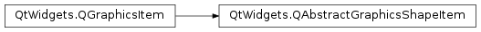

QAbstractGraphicsShapeItem¶
Inherited by: QGraphicsSimpleTextItem, QGraphicsPathItem, QGraphicsRectItem, QGraphicsEllipseItem, QGraphicsPolygonItem
Detailed Description¶
The
PySide2.QtWidgets.QAbstractGraphicsShapeItemclass provides a common base for all path items.This class does not fully implement an item by itself; in particular, it does not implement
PySide2.QtWidgets.QGraphicsItem.boundingRect()andPySide2.QtWidgets.QGraphicsItem.paint(), which are inherited byPySide2.QtWidgets.QGraphicsItem.You can subclass this item to provide a simple base implementation of accessors for the item’s pen and brush.
-
class
PySide2.QtWidgets.QAbstractGraphicsShapeItem([parent=nullptr])¶ Parameters: parent – PySide2.QtWidgets.QGraphicsItemConstructs a
PySide2.QtWidgets.QAbstractGraphicsShapeItem.parentis passed toPySide2.QtWidgets.QGraphicsItem‘s constructor.
-
PySide2.QtWidgets.QAbstractGraphicsShapeItem.brush()¶ Return type: PySide2.QtGui.QBrushReturns the item’s brush, or an empty brush if no brush has been set.
-
PySide2.QtWidgets.QAbstractGraphicsShapeItem.pen()¶ Return type: PySide2.QtGui.QPenReturns the item’s pen. If no pen has been set, this function returns QPen(), a default black solid line pen with 1 width.
-
PySide2.QtWidgets.QAbstractGraphicsShapeItem.setBrush(brush)¶ Parameters: brush – PySide2.QtGui.QBrushSets the item’s brush to
brush.The item’s brush is used to fill the item.
If you use a brush with a
PySide2.QtGui.QGradient, the gradient is relative to the item’s coordinate system.
-
PySide2.QtWidgets.QAbstractGraphicsShapeItem.setPen(pen)¶ Parameters: pen – PySide2.QtGui.QPenSets the pen for this item to
pen.The pen is used to draw the item’s outline.
© 2018 The Qt Company Ltd. Documentation contributions included herein are the copyrights of their respective owners. The documentation provided herein is licensed under the terms of the GNU Free Documentation License version 1.3 as published by the Free Software Foundation. Qt and respective logos are trademarks of The Qt Company Ltd. in Finland and/or other countries worldwide. All other trademarks are property of their respective owners.